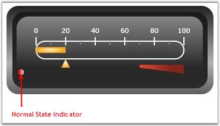
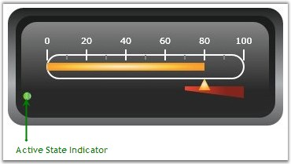

State Indicators indicate the state (for example: ON or OFF, TRUE or FALSE, etc.) of the Linear Gauge control. They support the following Indicator Styles.
· CircularLED
· RectangularLED
· Text
You can also specify the text for the state indicators by making use of the following properties.
· Text: displays the text when the indicator is inactive
· ActiveText: displays the text when the indicator is active
The following code example illustrates how to set these properties.
|
[XAML]
<syncfusion:LinearGauge.StateIndicators> <syncfusion:StateIndicator Name="m_indicator" Location="75,93" IndicatorHeight="10" IndicatorWidth="10" FontSize="12" FontFamily="Verdana" IndicatorStyle="CircularLED" Text="Normal" Background="Green" ActiveBackgroundBrush="Red" ActiveText="High"> <syncfusion:StateIndicator.StateRanges> <syncfusion:StateRange StartValue="70" EndValue="100" /> </syncfusion:StateIndicator.StateRanges> </syncfusion:StateIndicator> </syncfusion:LinearGauge.StateIndicators> |
|
[C#]
StateIndicator stateindicator = new StateIndicator(); stateindicator.Background = new SolidColorBrush(Colors.Green); stateindicator.ActiveBackgroundBrush = new SolidColorBrush(Colors.Red); stateindicator.Text = "low"; stateindicator.ActiveText = "high"; stateindicator.IndicatorWidth = 8; stateindicator.IndicatorHeight = 8; stateindicator.Location = new Point(80, 90); StateRange staterange = new StateRange(70, 100); stateindicator.StateRanges.Add(staterange); lineargauge.StateIndicators.Add(stateindicator); |

Figure 87: Normal State Indicator

Figure 88: Active State Indicator